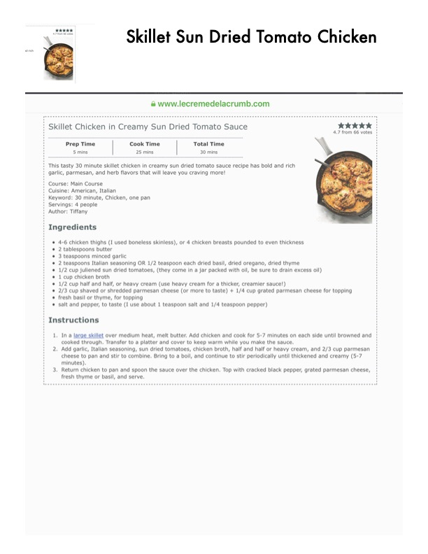

Skillet Chicken in Creamy Sun Dried Tomato Sauce

Original cookbook page 4
This tasty 30 minute skillet chicken in creamy sun dried tomato sauce recipe has bold and rich garlic, parmesan, and herb flavors that will leave you craving more!
Prep: 5 mins • Cook: 25 mins • Total: 30 mins
Ingredients
- 4-6 chicken thighs (I used boneless skinless), or 4 chicken breasts pounded to even thickness
- 2 tablespoons butter
- 3 teaspoons minced garlic
- 3 teaspoons Italian seasoning OR 1/2 teaspoon each dried basil, dried oregano, dried thyme
- 1/2 cup julienned sun dried tomatoes, (they come in a jar packed with oil, be sure to drain excess oil)
- 1 cup chicken broth
- 1/2 cup half and half, or heavy cream (use heavy cream for a thicker, creamier sauce!)
- 2/3 cup shaved or shredded parmesan cheese (or more to taste) + 1/4 cup grated parmesan cheese for topping
- fresh basil or thyme, for topping
- salt and pepper, to taste (I use about 1 teaspoon salt and 1/4 teaspoon pepper)
Instructions
- In a large skillet over medium heat, melt butter. Add chicken and cook for 5-7 minutes on each side until browned and cooked through. Transfer to a platter and cover to keep warm while you make the sauce.
- Add garlic, Italian seasoning, sun dried tomatoes, chicken broth, half and half or heavy cream, and 2/3 cup parmesan cheese to pan and stir to combine. Bring to a boil, and continue to stir periodically until thickened and creamy (5-7 minutes).
- Return chicken to pan and spoon the sauce over the chicken. Top with cracked black pepper, grated parmesan cheese, fresh thyme or basil, and serve.
Recipe #4 from collection